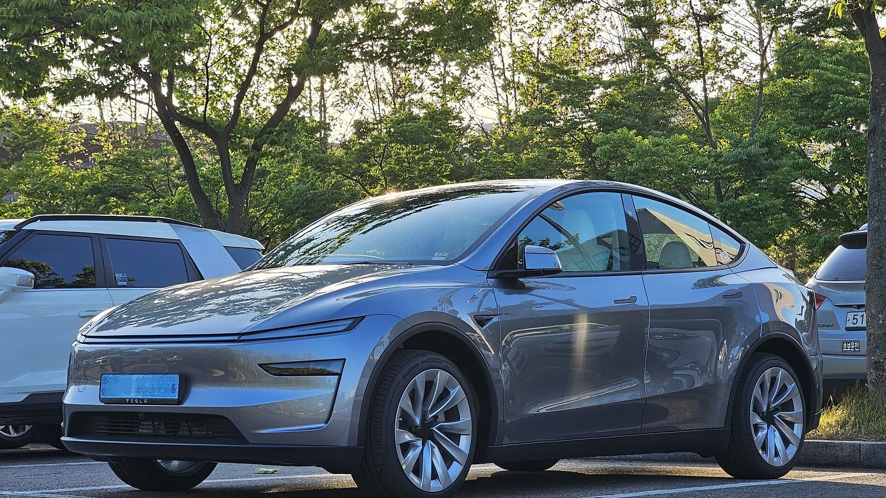

SUV · Review
Model Y

Verdict
Buy if you need the hatch, the height, and the same software as Model 3 without stepping up to X money.
Buy if
Families, dog people, and anyone who treats the boot as a second cupboard.
Skip if
Skip if you want the lowest seating position or the absolute best efficiency number on a long motorway diet.
The pitch
Model Y won Europe because it solved the boring problems: pushchair, Costco run, wet dog, airport run. Juniper and the ongoing refresh cycle polish the edges. The job stays the same.
On the road
Taller than a 3, so you feel more body motion, but the dual-motor cars still feel planted when you lean on them. Visibility is better for tight Irish junctions. That matters more than another tenth to 100.
Europe & Ireland
This is the car you see in every Supercharger queue for a reason. Higher seating helps on rural roads; the taller body drinks a bit more in winter. If FSD Supervised lands here, Y is where most owners will meet it.
Software & FSD
Identical software surface to Model 3. Camera height and ride height change what the stack sees — one reason Tesla Europe’s snow footage matters for the Nordics and for anyone waiting on Irish approval.